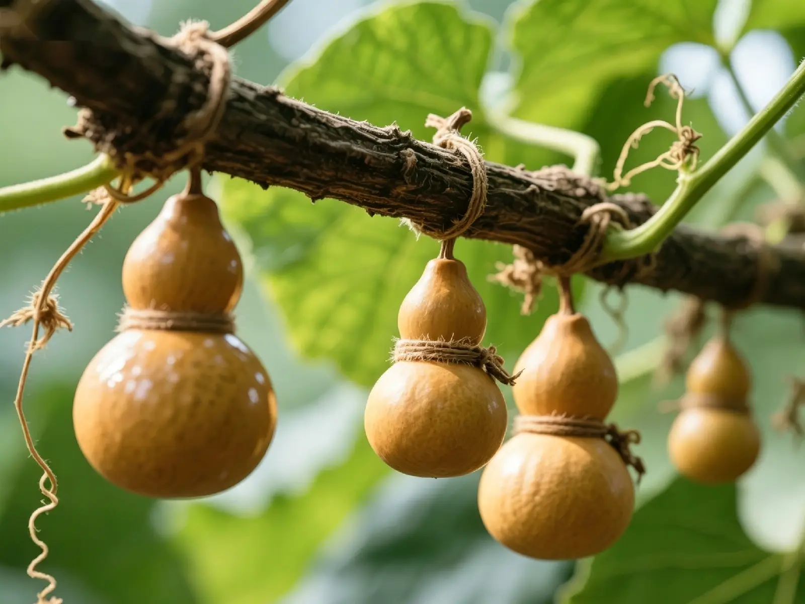
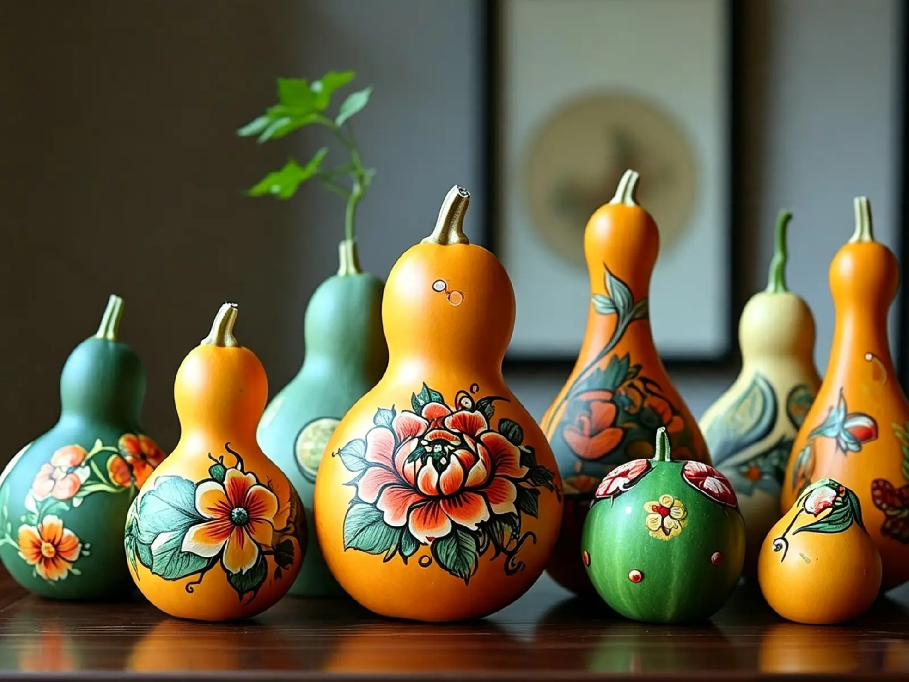
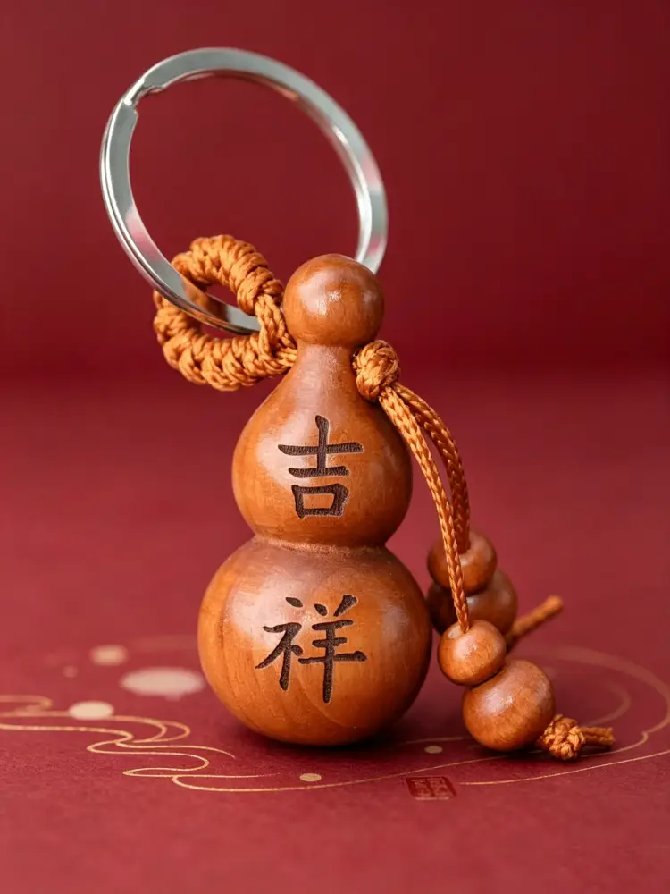

In der chinesischen Kultur gibt es nur wenige Objekte, die so viele Bedeutungsebenen in sich tragen wie die einfache Kalebassenflasche. Das chinesische Wort für Kalebasse – hú lú – klingt fast identisch mit „Glück und Wohlstand“ (fú lù). Diese einfache klangliche Verbindung hat die Kalebasse seit über zweitausend Jahren in das Gefüge der chinesischen Volkskultur eingewoben und sie zu einem der beliebtesten Glückssymbole gemacht.
Aber die Kalebasse ist weit mehr als nur ein Glücksbringer. Ihre runde, vollkommene Form steht für Vollständigkeit und Harmonie – Werte, die in der chinesischen Philosophie tief verwurzelt sind. Ihr schmaler Hals und ihr runder Bauch sollen Glück sammeln und bewahren, damit Segnungen nicht entweichen können. Ihre langen, rankenden Reben und die zahlreichen Samen tragen das schöne Versprechen von Beständigkeit und Wohlstand für kommende Generationen in sich.
In der Antike hängten die Menschen oft getrocknete Kalebassen über ihre Türschwellen, um Negativität abzuwehren und Frieden in ihre Häuser zu laden. In Mythen und Legenden trugen Unsterbliche Kalebassen als Gefässe für magische Elixiere, um zu heilen, zu schützen und den Würdigen Segnungen zu gewähren

Dieser Schlüsselanhänger ist aus Pfirsichholz geschnitzt, das in der chinesischen Tradition seit langem als die „Essenz der fünf Hölzer“ verehrt wird. Seit Jahrtausenden gilt es als Material, das Unglück vertreibt und seinen Träger vor Schaden bewahrt. In alten Zeiten schnitzten die Menschen Talismane aus Pfirsichholz und hängten sie über ihre Türen, um ihre Häuser zu schützen. Es wird angenommen, dass Pfirsichholz eine sanfte, aber beständige schützende Energie trägt – ein Glaube, der bis heute fortbesteht.
Dieser Schlüsselanhänger aus Pfirsichholz in Kalebassenform vereint all diese vielschichtigen Bedeutungen in kompakter Form. Klein und zart, kann er überallhin mitgenommen werden – an den Schlüsselbund gehängt, an die Tasche geklippt oder als durchdachtes Geschenk an einen lieben Menschen verschenkt.
Wenn Sie ihn bei sich tragen, tragen Sie nicht nur einen eleganten kleinen Gegenstand, sondern jahrhundertealte Segnungen:
— Glück, das jeden Aufbruch begleitet
— Frieden, der jede Reise behütet
— Wohlstand, der in jedem alltäglichen Moment gegenwärtig ist
— Fülle, die jeden vergehenden Tag erfüllt
— Beständigkeit, die Vergangenheit mit Zukunft verbindet

Diese kleine Kalebasse birgt all dies in sich – einen sanften, wortlosen Segen einer alten Kultur, die immer noch an die Kraft der Symbole glaubt, an die Wärme der Bedeutung und an die stille Aufrichtigkeit der kleinen Gesten des Lebens.

Geschnitzter Kürbis-Anhänger aus Pfirsichholz

Gestreifter Kürbis-Anhänger aus blitzgetroffenem Pfirsichholz

Roter Bambus- und Holzarmband mit Drachen-Kürbis-Gravur

Geflochtene Kürbis-Halskette aus Pfirsichholz mit natürlicher Maserung

Kürbis-Schlüsselanhänger aus Sandelholz, dunkel rötlich-braun

Kürbis-Schlüsselanhänger aus Pfirsichholz mit geschnitzter Aufschrift «Glück»